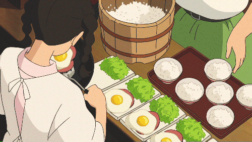

-

-

- 
¡BIENVENIDO AL RINCÓN DE LAS RECETAS DEL STUDIO GHIBLI!
"Sumérgete en un mundo de sabores extraordinarios y crea tus propias aventuras culinarias con nuestras detalladas guías inspiradas en las películas más queridas del Studio Ghibli."
Tocino y huevos
El castillo ambulante
Empieza tu día con el delicioso desayuno del Castillo Ambulante. ¡Descubre cómo prepararlo aquí!
Ramen
Ponyo
¿Qué crea el mejor estado de ánimo para el otoño? Una buena película y un buen plato de delicioso ramen.

Bento
Mi vecino totoro
¿Alguna vez has comido una comida que se ve demasiado hermosa para comerla? Si es así, es posible que haya experimentado el arte de hacer bento.
Bollos al vapor
El viaje de Chihiro
Descubre la magia de los bollos al vapor de 'El Viaje de Chihiro', donde la exquisitez se encuentra con la creatividad en cada bocado.
Nimono
El castillo en el cielo
El Nimono es un guiso japonés con ingredientes frescos cocidos en un caldo aromático, conocido por su sencillez y delicados sabores que reflejan la esencia de la cocina japonesa.
Kasutera
El viaje de Chihiro
El Kasutera es un pastel japonés de origen portugués, también conocido como Castella.
Okayu
La princesa Mononoke
El Okayu es un plato tradicional japonés consumido para el desayuno o durante enfermedades, conocido por su suavidad y facilidad de digestión.